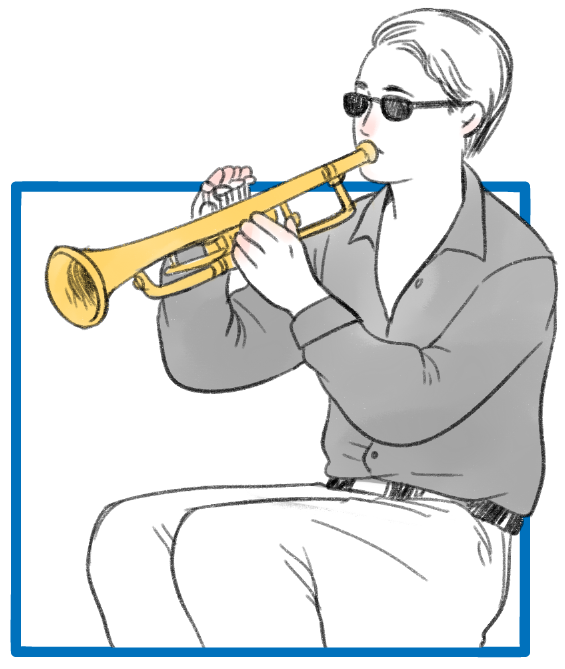

มีเรื่องเล่ากันมาว่า นักดนตรีเอกของโลกได้กล่าวถึงพระปรีชาสามารถในการทรงดนตรีว่า หากพระบาทสมเด็จพระเจ้าอยู่หัวมิได้ทรงเป็นพระมหากษัตริย์ ก็จะต้องทรงเป็นพระราชานักดนตรีของโลกแต่พระบาทสมเด็จพระเจ้าอยู่หัวเป็นทั้งพระมหากษัตริย์ และทรงเป็นนักดนตรีได้พร้อมกัน นอกจากทรงเล่นดนตรีแล้วยังทรงสอนดนตรีให้ผู้อื่นเล่นด้วย เคยเล่าพระราชทานว่า “ ได้สอนคนตาบอดเล่นดนตรีสอนลำบากเพราะเขาไม่เห็นท่าทาง เมื่อพยายามอธิบายจนเข้าใจสามารถเป่าออกมาเป็นเพลงไพเราะได้ หรือแม้แต่โน้ตเดียวในตอนแรก ดูสีหน้าเขาแสดงความพอใจและภูมิใจมาก ” ทรงแนะนำวิธีการเล่นดนตรีพระราชทานผู้อื่นที่มาเล่นดนตรีถวาย หรือเล่นร่วมวง ดูเหมือนจะเคยมีรับสั่งว่าการเล่นดนตรีทำให้เกิดความสามัคคีเป็นนักดนตรีเหมือนกัน
เพลงพระราชนิพนธ์แต่ละเพลงนั้น ล้วนแสดงออกถึงพระมหากรุณาธิคุณที่มีต่อพสกนิกรทุกหมู่เหล่าโดยถ้วนหน้า เช่น เพลงยามเย็น พระราชทานแก่สมาคมปราบวัณโรค เพื่อนำออกแสดงเก็บเงินบำรุงการกุศล เพลงใกล้รุ่ง บรรเลงเป็นปฐมฤกษ์ในงานของ สมาคมเลี้ยงไก่แห่งประเทศไทย เพลงยิ้มสู้ พระราชทานแก่โรงเรียนสอนคนตาบอด เพลงลมหนาว พระราชทานในงานประจำปี ของสมาคมนักเรียนเก่าอังกฤษในพระบรมราชูปถัมภ์ เพลงพรปีใหม่ พระราชทานแก่พสกนิกรเนื่องในวันปีใหม่ เพลงเกิดเป็นไทยตายเพื่อไทย เพลงความฝันอันสูงสุด และเพลงเราสู้ พระราชทานแก่ผู้ปฏิบัติหน้าที่เพื่อประเทศชาติ Kinari Suite พระราชทานเพื่อใช้ ประกอบการแสดงบัลเล่ต์ชุดมโนราห์ และมีเพลงประจำสถาบันที่ทรงพระกรุณาโปรดเกล้าฯ พระราชทาน ได้แก่ เพลงมหาจุฬาลงกรณ์ เพลงธรรมศาสตร์ เพลงเกษตรศาสตร์ เพลงธงไชยเฉลิมพล ราชวัลลภ และราชนาวิกโยธิน
ระบาทสมเด็จพระเจ้าอยู่หัว ได้ทรงพระกรุณาโปรดเกล้าฯ ให้มีการรวมนักดนตรีสมัครเล่น มารวมกันตั้งเป็ผวงขึ้นเป็นครั้งแรก ขณะที่ทรงประทับ ณ พระที่นั่งอัมพรสถาน ประกอบด้วยพระราชวงศ์ผู้ใหญ่ที่ทรงคุ้นเคย และเมื่อโปรดเกล้าฯ ให้จัดตั้ง สถานีวิทยุ อ.ส. (อัมพรสถาน) ขึ้น
ในปีพุทธศักราช ๒๔๙๕ เพื่อให้เป็นสื่อกลาง
ให้ความบันเทิงและสาระประโยชน์ในด้านต่างๆ พระราชทานชื่อว่า “วงลายคราม” ก็ได้มีการออกอากาศส่งวิทยุกระจายเสียงกับวงดนตรีต่างๆ ด้วย ต่อมาโปรดเกล้าฯ ให้นักดนตรีรุ่นหนุ่มมาเล่นดนตรีร่วมกับวงลายคราม จึงเกิดเป็น วงดนตรี อ.ส.วันศุกร์ ขึ้น วงดนตรี อ.ส. วันศุกร์มีลักษณะพิเศษคือ พระบาทสมเด็จพระเจ้าอยู่หัว ทรงร่วมบรรเลงกับสมาชิกของวง ออกอากาศกระจายเสียง ทางสถานีวิทยุประจำวันศุกร์ และยังทรงจัดรายการเพลงเอง ทรงเลือกแผ่นเสียงเองในระยะแรก บางครั้งก็โปรดเกล้าฯ ให้มีการขอเพลง และจะทรงรับโทรศัพท์ด้วยพระองค์เอง

นอกจากนี้ ยังทรงได้ ริเริ่มให้นำเพลงสากลมาแต่งเป็นแนวเพลงไทย โดยโปรดเกล้าฯ ให้นาย เทวาประสิทธิ์ พาทยโกศล นำทำนองเพลง
พระราชนิพนธ์ มหาจุฬาลงกรณ์ มาแต่งเป็นแนวไทย บรรเลงด้วยวงปี่พาทย์ เพื่อนำขึ้นบรรเลงถวาย แล้วก็พระราชทานชื่อว่า เพลงมหาจุฬาลงกรณ์เช่นเดียวกัน นับเป็นเพลงไทยเพลงแรกที่ประดิษฐ์ขึ้นจากเพลงไทยสากลตามพระราชดำริที่ทรงสร้างสรรค์